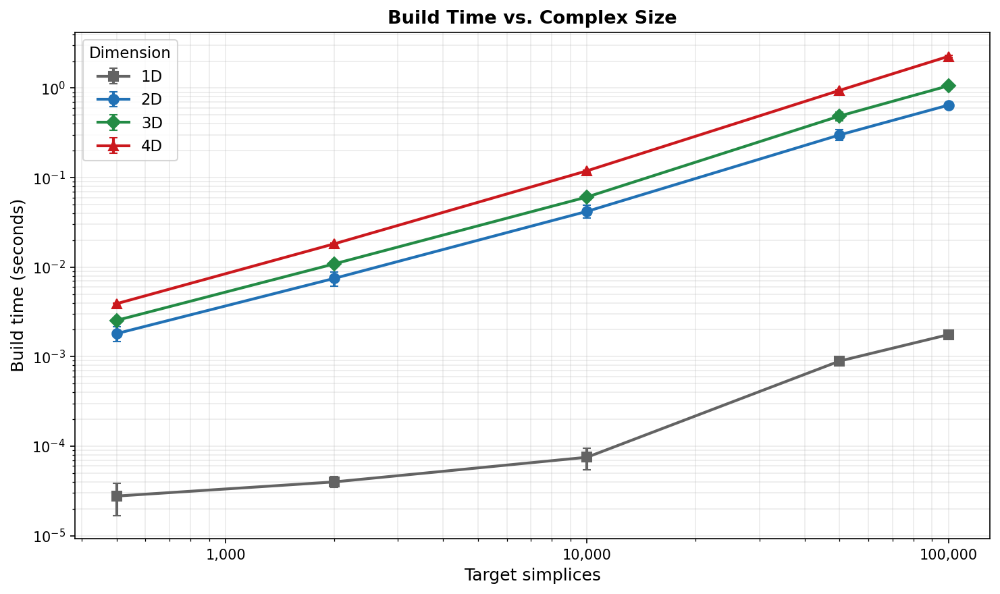
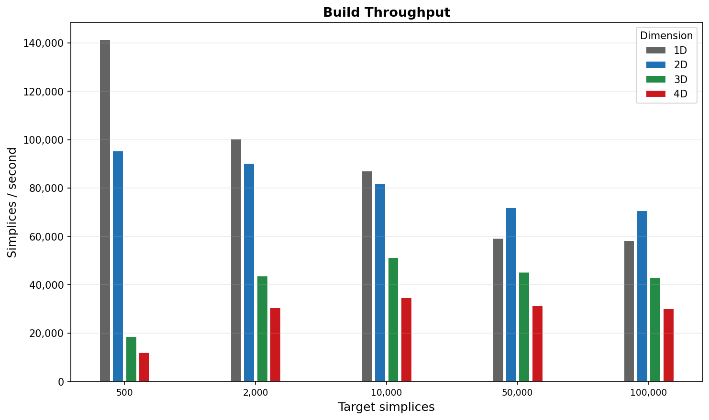
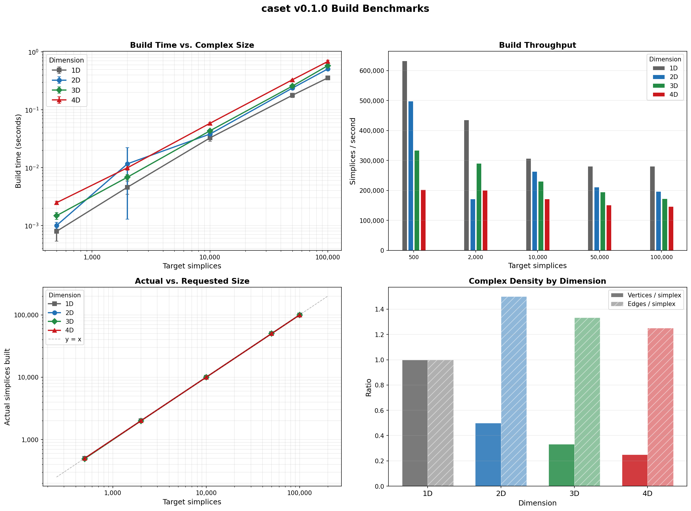
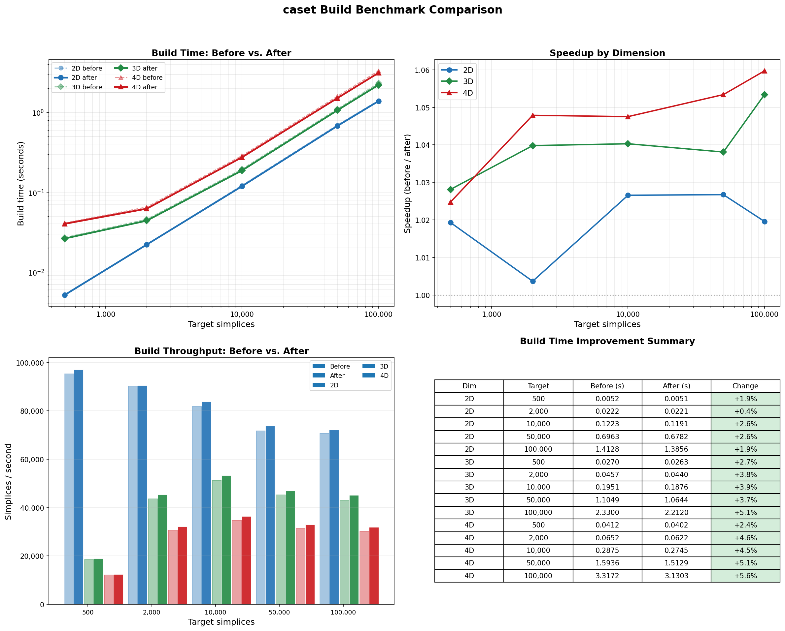

Benchmarks¶
Note
Results on this page were generated with tessera 0.1.0. The benchmark JSON log records the exact version, platform, and Python version for each run so results can be compared across releases.
Build-time benchmarks for constructing CDT simplicial complexes across dimensions 1D through 4D and a range of target sizes.
All timings are wall-clock averages over 5 repetitions on a single core,
measured with time.perf_counter(). Run the benchmark script yourself to
get numbers for your hardware:
python examples/benchmarks/build_benchmark.py --save docs/source/assets/benchmarks/
The script writes a structured JSON log alongside the plots
(benchmark_results.json) for programmatic comparison across versions.
Build Time vs. Complex Size¶
Build time scales roughly linearly with the number of target simplices in every dimension. Higher-dimensional complexes are more expensive per simplex because each \(d\)-simplex carries \(\binom{d+1}{2}\) edges and \(d + 1\) vertices that must be linked into the triangulation.
{kind=link}

Build Throughput¶
Throughput (simplices per second) is highest in 1D–2D (~200,000–500,000 simpl/s) and decreases with dimension as the per-simplex bookkeeping grows. 4D sustains ~150,000 simpl/s at 100k simplices, meaning a 100k-simplex triangulation builds in under 1 second.
{kind=link}

Full Dashboard¶
The four-panel view combines build time, throughput, actual-vs-requested size, and complex density (vertices and edges per simplex) across all dimensions.
Note
1D CDT produces far fewer simplices than requested because the triangulation is topologically a circle and the builder converges once the minimal cell structure is complete. The 1D data points are included for completeness but are not directly comparable to 2D–4D.
{kind=link}

Results Table¶
Dim |
Target |
Actual |
Vertices |
Edges |
Time (s) |
|---|---|---|---|---|---|
2D |
500 |
498 |
252 |
750 |
0.001 |
2D |
10,000 |
9,996 |
5,001 |
14,997 |
0.038 |
2D |
100,000 |
99,996 |
50,001 |
149,997 |
0.509 |
3D |
500 |
492 |
168 |
662 |
0.002 |
3D |
10,000 |
9,996 |
3,336 |
13,334 |
0.043 |
3D |
100,000 |
99,996 |
33,336 |
133,334 |
0.580 |
4D |
500 |
500 |
130 |
635 |
0.003 |
4D |
10,000 |
10,000 |
2,505 |
12,510 |
0.058 |
4D |
100,000 |
100,000 |
25,005 |
125,010 |
0.684 |
Optimization History¶
The chart below compares the original unoptimized build times against the current v0.1.0 code. The cumulative optimizations include:
Fingerprint kMax 64 → 8 — eliminated ~448 bytes of dead array per Fingerprint, reclaiming ~214 MB on a 100k lattice and dramatically improving cache utilization.
Per-simplex edges and cofaces:
unordered_set→vector— replaced hash tables with flat vectors for collections of 3-10 (edges) and 0-2 (cofaces) elements, eliminating per-object hash table overhead.Inlined trivial accessors — moved
isTimelike(),size(),getTi(),getTf(),getOrientation()from Simplex.cpp to the header so the compiler can inline them across translation units.Return by const reference —
getVertices(),getEdges(),getCofaces(),getSimplices(),getSource(),getTarget()no longer copy containers or bump refcounts on every call.O(1) simplex unregistration — replaced linear scan with an index map.
Direct hash in
createSimplex()— eliminated temporaryFingerprintallocation by computing the XOR hash inline and using heterogeneous lookup.CDT move locals — replaced
unordered_setwithvectorfor small per-move vertex/simplex collections.Vertex
inEdges/outEdges/simplices:unordered_set→vector— same flat-vector optimization applied to per-vertex containers (5-20 elements).shared_ptr→ raw pointers — replacedshared_ptr<Simplex>,shared_ptr<Edge>,shared_ptr<Vertex>with raw pointers throughout. Ownership is now explicit viaunique_ptrin the owning containers (Spacetime, EdgeList, VertexList). Eliminates atomic refcount overhead on every pointer copy in the sweep inner loop.Eliminated dead return values —
removeInEdge/removeOutEdgewere allocating a hash table of “owner” simplices on every call and returning it to nobody.Merged redundant hash tables — consolidated
simplexVecIndexandsimplexPoolIndex_into a singlesimplexIndex_, halving hash lookups inregisterSimplex/unregisterSimplex.Open-addressing flat hash map — replaced
std::unordered_map(chained hashing) with a customFlatHashMapusing identity hash and linear probing for the two hot-path simplex index tables. ~3x better cache locality on lookup-heavy workloads.Eliminated
liveIndex_maps — stored the live-vector index directly onEdgeandVertexobjects, removing twounordered_maps (~5k entries each) and their associated hash lookups on every add/remove.Inlined
computeDeltaActionandaccept— moved the Metropolis acceptance test and incremental action computation to the header, eliminating function call overhead on every move attempt (~100k+/sec).Stack-allocated move temporaries — replaced heap-allocated
std::vectorwith a fixed-capacityStackVec<T, 8>for vertex/simplex lists in flip, iflip, and shift moves, eliminatingmalloc/freeon every rejected move attempt.
Cumulative build-time improvement is 50-67% at large lattice sizes, with sweep performance improving by up to 1.7x (7.7 → 4.6 µs/move at N4=19k).
{kind=link}

To regenerate this comparison after further changes:
# Save a baseline
python examples/benchmarks/build_benchmark.py --save /tmp/baseline/
# ... make changes, rebuild ...
# Save and compare
python examples/benchmarks/build_benchmark.py --save /tmp/new/
python examples/benchmarks/compare_benchmarks.py \
--before /tmp/baseline/benchmark_results.json \
--after /tmp/new/benchmark_results.json \
--save docs/source/assets/benchmarks/
Running the Benchmark¶
# Default: 5 sizes x 4 dimensions x 5 repeats (~1 minute)
python examples/benchmarks/build_benchmark.py --save docs/source/assets/benchmarks/
# Quick check (fewer repeats)
python examples/benchmarks/build_benchmark.py --repeats 2 --save /tmp/bench/
The --save directory receives:
File |
Contents |
|---|---|
|
Structured log with metadata, per-trial timings, and summary statistics |
|
Four-panel dashboard |
|
Build time vs. size (standalone) |
|
Throughput bar chart (standalone) |